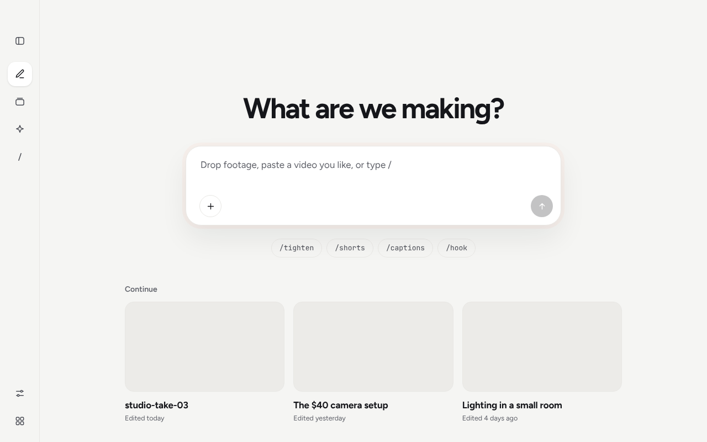
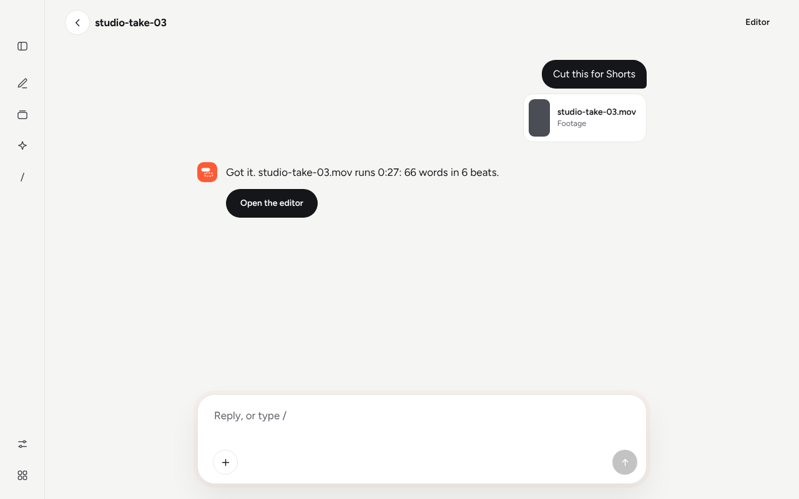
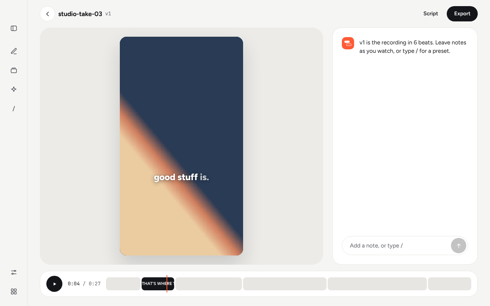

Cutalong is a video editor you talk to. The identity is one idea: cut along the dotted line. The solid bar is the take as it was recorded; the dashed coral bar under it is where the cut goes. Everything here exists so that idea stays clear on a 20 pixel avatar, beside a creator's own footage, and across a thousand edits.
The app still installs as Chop Shop while the new name is cleared, so updates keep reaching everyone who already has it. The Chop Shop guidelines are kept in docs/archive. Colours, type, spacing and motion below are the same values the app is built from (src/renderer/src/cutalong/tokens.json).
The mark is two bars: the take, and the line you cut along. It always comes as a pair.
The default: the mark and the wordmark, always lower case. The open rail, a site header, a deck cover.
Once the name is known: the collapsed rail, an app tile, a watermark corner.
The mark in white on a coral tile. It speaks for Cutalong in a thread, and is the only coral surface.
Don't fill the cut line.
Don't recolour the cut line.
Don't swap the bars.
Don't capitalise the wordmark.
A warm grey ground, white cards and ink do the work, so a creator's footage is the loudest thing on the page. Coral marks the cut and nothing else.
Coral is never text and never a button fill. A screen with two coral things has one too many.
Primary actions are ink. There is one per view; everything else is a white card with a hairline, or text.
Contrast figures are on the ground. Muted text is for meta only; anything a person has to read to act is ink or ink soft.
No new colours in components. Brand colours a creator picks belong to their videos, not to the app.
Figtree for everything people read. JetBrains Mono for the few things a machine names: commands, timecode and file names.
A 4 pixel base. Page margins are 32; a reply sits 24 above its buttons.
Pills for every button and chip; generous corners elsewhere.
Only two things are lifted: the composer, with a faint coral ring, and the video frame. The selected segment of a control gets a 1 pixel tab shadow. Menus and the toast float with one shared shadow.
The interface is calm so the video is the loud part. One thing per screen: a question and a composer, a reply and its buttons, or a preview with notes and the beat strip.

Start: one question and the composer. The rail holds everything else.

A thread: a plain sentence with exact numbers, and one primary action.

The editor: the preview, notes, and the beat strip with the coral playhead. Stand-in footage.
One thing per screen. A second thing goes behind a button, a menu or Details.
Talk, don't configure. Settings are sentences and slash commands.
Numbers live behind Details. A plain sentence first, at most three facts as chips.
Every change is a named version, so nothing a person does is lost.
A good editor sitting next to you: first person, plain words, exact numbers. It says what it did and what happens next, then stops.
We sound like
"Got it. studio-take-03.mov runs 0:27: 66 words in 6 beats."
"v3 is ready. The hook word is bigger and the ending stays on you."
"Add your Anthropic API key in Settings and I can work on this."
"Connected. I can turn what you say into edits."
We never sound like
"Your edit is looking amazing!"
"Let AI work its magic."
"Clone any creator's style in one click."
"Oops! Something went wrong."
First person for Cutalong, second person for the creator. "I" and "you", never "we" or "the user".
No exclamation marks, no emoji, no praise. Nothing is magic or effortless.
Never the word clone. A video someone likes is inspiration: Cutalong measures its pattern and never takes its footage.
Labels are verbs that say what happens: "Open the editor", "Apply 2 notes as v4", "Save key".
Seconds read as 0.15 s, 1.8 s, 12 s; running times as 0:52. Say the number rather than "a bit" or "some".
When something fails, say what happened and the one thing to do next, in a sentence.
Cutalong moves the way a good editor works: quickly, without fuss, and only when something changes. Four durations and three curves cover everything; what a hand moves springs.
Nothing takes longer than 320 ms. Leaving is always quicker than arriving.
Over time, left to right; from where a thing starts, bottom, to where it ends.
Arriving: quick, then settling.
Leaving: soft, then away.
Moving from place to place.
What a hand moves: a switch.
While Cutalong works, the dashed bar marches along its line, one dash and gap every 1.28 s: on the assistant beside its progress, and in the send button. It is the only thing that loops, and never a spinner. With reduced motion it breathes instead.
Arrive with Enter, leave sooner with Exit, move between places with Standard. What a hand moves springs.
Only position and opacity change, plus a clip or a dash. Layout never animates, and text never reflows while it moves.
Screens fade through with a slight rise. The composer carries over, and footage grows from its card into the preview.
Nothing moves when nothing is happening. The footage never moves for show, and motion never adds coral.
With reduced motion, opacity still changes and nothing travels.